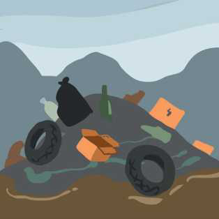
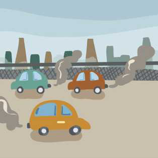
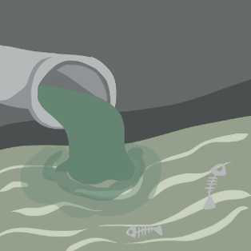
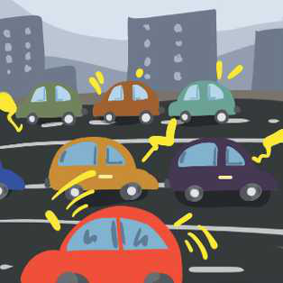

TEMATIKA 5: MJEDISI DHE SHËNDETI
1.NJOHIM LLOJET E NDOTJES DHE I PARANDALOJMË ATO
Në klasën e Ditës dhe të Diellit, nxënësit punuan së bashku informuesin e mëposhtëm, i cili paraqet llojet kryesore të ndotjes. Ata e titulluan “Njohim llojet e ndotjes dhe i parandalojmë ato!”




Katër llojet e ndotjes

- E ajrit
- E ujit
- E tokës
- Zhurma